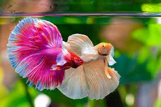

Página de pececitos
Imágenes de pececitos


Si quieres ver mas imagenes de pacecito, da click en este enlace.
Lista de pececitos
3 cosas que los pececitos aman
- Compañia
- Comida
- colores
3 cosas que los pececitos odian
- La soledad
- Especies depredasdoras
- Vibraciones